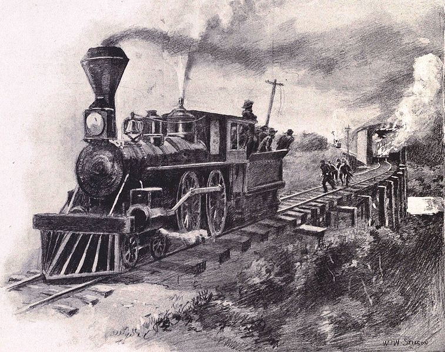
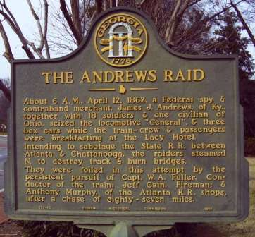

|
In Spring of 1862, one of the western Union Army's most
trusted spies, James J. Andrews, was given the task of
launching a secret commando raid deep into the South. Also
known as "The Great Locomotive Chase," Andrews' Raid is a
|

An 1862 engraving imagines what
Andrews' Raid looked like.
|
perennial favorite among those who enjoy colorful war tales,
and has been the subject of paintings, songs, and at least
two movies. Andrews had no trouble recruiting 22 volunteers
for the daring adventure. Their aim was to cut the rail line
that served as the supply link between Marietta, Georgia,
and Chattanooga, Tennessee. The plan developed by Andrews
was simple. His men would divide up into small groups, out
of uniform, and go to Marietta where they would board a
northbound train headed for Big Shanty, Georgia (now
Kennesaw Mountain). The tiny crossroads town was a meal stop
on the railroad, and when the other passengers were eating
their breakfast, Andrews and his men would steal a
locomotive, and race unhindered toward Chattanooga, stopping
only to cut telegraph lines, burn bridges, and render
unusable a critical part of the Confederacy's railroad
lifeline.
The execution of the plan, however, did not go as
planned. One major setback arose when the weather turned
very wet, making the roads impassable and bridges
unburnable. Another unforeseen complication was that
recently the Confederates had established a military camp at
Big Shanty. Now, instead of few or no Rebel soldiers, there
were hundreds in the area. Nevertheless, Andrews and his men
started their raid on the night of April 12th with high
hopes. They did manage to capture a locomotive, called "The
|

A plaque commemorates the site of Andrews' Raid today.
|
General," along with three boxcars, and then took off in a
hurry. Their deed immediately discovered, the Confederates
grabbed another engine and went in hot pursuit. The wild
chase continued for almost 90 miles, until "The General" ran
out of fuel near Grayville, about 18 miles south of
Chattanooga. At that point, Andrews and his men jumped out
the train and hid in the woods, where all were captured.
As the raiders were out of uniform when arrested, they
were treated as spies. Two months later, Andrews and seven
Union soldiers were court-martialed and executed. Eight
other raiders escaped, and the rest were paroled in an
exchange organized by Secretary of War Edwin Stanton. Later,
the survivors of Andrews' Raid became the first recipients
of the Medal of Honor, the nation's highest award for
bravery.
Source: Joan Waugh, ed., Facts on File Encyclopedia of American
History: Civil War and Reconstruction, 1856 to 1869 (New York: Facts on
File, 2003), 11.
|